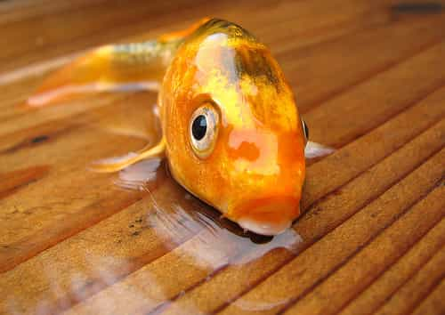

Contrary to popular belief, misogyny isn’t the hatred of women—it’s the hatred of feminine qualities, like kindness, nurturing, and sensitivity. This is why misogyny often co-occurs with homophobia (you know, real homophobia, the kind we only find in the Muslim world).
A misogynist is someone who thinks only male traits—high-testosterone traits—like bravery, focus, and persistence are essential to society. Sweetness and empathy to the misogynist are an extravagance, a waste of time. This is why feminists are the true purveyors of misogyny. When they tell women to overcome the patriarchy, they implicitly tell them to hate themselves.
Here are five ways, specifically, feminism promotes misogyny by turning the feminine spirit in woman against herself.

According to feminist scripture, homemaking and caretaking are inferior roles. I’d love to see a woman at a New York cocktail party say she’s a stay-at-home mother without feeling the need to explain herself. So a woman needs a job to be valuable. The implication of this idea is women are not valuable in their own right—they must act like men to be valuable, and so they are metaphysically inferior. Men and their capabilities are the standard of measure.
The social value of femininity, beyond being attractive to men, is raising children. Human babies are born about two years premature in order to fit our huge brains through our mothers’ loins. So we come out of the womb as glorified fetuses. These fetuses need to be nurtured. One way women nurture is by helping children regulate emotion. If the child skins his knee, for instance, the mother is there to let him know, through the innate expression of comfort on her face, that it’s okay. This helps the child to see pain as something to confront and manage, not something to avoid.
I worked in a homeless shelter last year counseling drug addicts. The patients who were the most violent drug addicts all came from different backgrounds, races, religions, and socio-economic conditions. But there was one thing they all had in common: they weren’t raised by their mom. Their mom either left when they were young, was on drugs herself and so psychologically absent, or at work and so left them with a nanny or daycare. Without moms, society would crumble faster than if there weren’t marketing professionals.
A woman who eschews motherhood is eschewing the one job she is perfectly built for, the one job no one else in the world could even come close to doing well. Perhaps motherhood is boring, but God is probably bored a lot, too.
Feminism tells women they don’t need a man to be happy. This is a fantasy based on insecurity. No one is happy when they’re alone. We may do okay on our own, but we’re not happy on our own. Of course, if we cannot figure out how to get along with the opposite sex, then we convince ourselves being alone is fine as a defense mechanism.
The only reason our brains grew from the 30 billion neurons of chimps to the 100 billion neurons of humans in the last eight million years is because we began to form complex, social relationships—specifically, we began to form pair bonds. This is the nature of who we are, and it’s imperative to bond with the opposite sex to assuage this nature. It’s the same reason we go to the gym. For millions of years our ancestors were hunting mammoths and walking ten miles per day. So now we work out to trick our body into thinking we’re still trekking and hunting our way across the African savannah.

Feminism is about making out women to be like men—therefore, they can be as tough as men. But they’re not as tough. Toughness is a high-testosterone trait. Can a girl be tough? Sure, but it doesn’t make her less valuable if she’s not. To say otherwise is to denigrate the value of womanhood.
The philosophical foundation of feminism is Marxism. Feminism preaches equality, yes, but only in the Marxist definition of what that word means—the subversion of the oppressive, ruling class. Instead of the have and have-nots, we now have the penis-havers and the penis-have-nots. This implies that women, by being inherently disadvantaged by the patriarchy, require the political ruling class for survival. For this purpose, women are pitted against men as if we had diverging interests.
An example of this is the myth that anorexia is perpetuated by unrealistic portrayals of women. Not only has this explanation of anorexia been disproven, it’s demeaning to women—it tells them simply looking at images of thin women will make them want to hurt themselves. No woman I have ever met is this stupid, but feminism thinks women are this stupid.
The truth is anorexia is an anxiety disorder caused by the feelings of being out of control that come with menarche. But this truth doesn’t blame the political opposition (men), and so it doesn’t fit with the Marxist narrative. With women believing they’re invariably oppressed by men, now there’s have half the population ripe to be used for political ends.
The misogyny perpetuated by feminism is nothing less than thought control, which occurs when we believe we cannot do something while at the same time we believe we must do that thing. Women can’t compete with men in the working world, but they have to. Women can’t leave their child with a nanny, but they have to. Women can’t be alone, but they have to. Women can’t be tough like men, but they have to. It’s obsessive-compulsive disorder on a cultural level.
The inherent value of women is undeniable; they create the soil in which a healthy oak can grow. The soil and the oak each play their part as long as they can work together.
Read More: 10 Ways To Fight Back Against Feminism